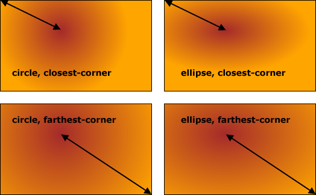

N'importe quelle propriété CSS
qui accepte comme valeur une image peut utiliser une fonction
générant des dégradés de couleurs ( CSS
Image Values and Replaced Content Module).
La propriété background-image
peut donc servir à remplir un fond avec un dégradé.
Un dégradé peut être linéaire, radial ou répétitif. Il est composé
d'au moins 2 couleurs avec leur point d'arrêt. Le point d'arrêt d'une
couleur est la coordonnée où la couleur pure s'arrête et où commence
la transition continue vers le point d'arrêt d'une autre couleur.
exemple de dégradé linéaire de 2 couleursexemple de dégradé linéaire de 3 couleurs
Dégradés linéaires
Un dégradé linéaire s'étend le long d'une ligne droite orientée et se fait
avec la fonction linear-gradient() dont la signature
est la suivante :
linear-gradient([[<angle> | to
<côté-ou-coin> ],]? <point-arrêt> [,
<point-arrêt>]+)
<angle> Facultatif. Le degradé sera orienté
suivant cet angle exprimé sous la forme d'un nombre suivi d'une
unité d'angle (deg, grad, rad,
turn - spécifications).
0deg pointe vers le haut et les angles positifs
augmentent dans le sens des aiguilles d’une montre : 90deg
pointe vers la droite, 180deg pointe vers le bas, etc.
Si aucun <angle> n'est fourni ou aucun <côté-ou-coin>,
le dégradé commence en haut et va vers le bas.
<côté-ou-coin> Facultatif. Définit le côté ou
le coin où finit le dégradé (facultatif). La valeur doit commencer
par to, suivi d'un ou deux mots-clés. Un seul mot-clé
définit le côté de fin. Deux mots-clés définissent un angle de fin.
Les valeurs suivantes peuvent être utilisées :
left (le dégradé finit à gauche) et right
(le dégradé finit à droite),
top (le dégradé finit en haut) et bottom
(le dégradé finit en bas).
<point-arrêt> Il doit y avoir au moins deux
points d'arrêt de couleurs. Chaque point d'arrêt de couleur comporte
une ou deux valeurs : une couleur et une position (falcultative).
N'importe quelle façon de spécifier une
couleur peut être utilisée.
Chaque point d'arrêt peut avoir un pourcentage ou une valeur
de longueur qui definit où s'arrête la couleur avant de commencer
sa transition vers la couleur du point d'arrêt suivant. Les valeurs
peuvent être supérieures ou inférieures aux limites du dégradé.
L'affichage résultant sera dans ce cas une "partie" seulement des
transitions entre les 2 couleurs.
Vous pouvez tester le rendu avec n'importe
quel autre angle (pas forcément des multiples de 90).
Dégradé linéaire
Reprenez l'exemple précédent en modifiant l'angle des dégradé
pour utiliser la forme <côté-ou-coin>.
Des dégradés entres couleurs proches sont souvent utilisés
par exemple comme fond pour des boutons.
Dégradés avec plus de 2 couleurs
Dégradés radiaux
Les dégradés radiaux partent d'un centre et s'étendent vers
l'extérieur en formant un cercle ou une ellipse. On utilise la
fonction radial-gradient pour les définir :
radial-gradient([[ <forme> || <taille> ] [
at <position> ]? , | at <position> , ]?
<point-arrêt> [ , <point-arrêt> ]+)
<forme> Facultative. Indique la forme finale
du dégradé :
ellipse : le dégradé a la forme d'une
ellipse.
circle : le dégradé a la forme d'un cercle.
Si <forme> est omise, la forme finale est un cercle si
<taille> n'a qu'une seule longueur ou une ellipse si
<taille> a deux longueurs.
<taille> Facultative. Définit la taille
finale du dégradé. Valeur par défaut : farthest-corner.
Les valeurs peuvent êtres des longueurs
ou des mots-clés.
il peut y avoir ou deux valeurs de longueur séparées par
des espaces,
si il y a une seule valeur de longueur elle indique le
rayon d'un dégradé qui aura la forme d'un cercle,
si il y a deux valeurs, la première valeur représente le
rayon horizontal et la seconde le rayon vertical d'un dégradé en
forme d'ellipse,
les pourcentages ne peuvent être utilisés que pour la
taille d'un dégradé elliptique
Les mots-clés utilisables sont : closest-side, closest-corner,
farthest-side et farthest-corner.
longueur du dégradé par rapport aux côtés

longueur du dégradé par rapport aux coins
Pour les dégradés elliptiques avec closest-corner, la
forme du dégradé a le même rapport largeur-hauteur que si le mot
clé closest-side.
Pour les dégradés elliptiques avec farthest-corner, la
forme du dégradé a le même rapport largeur-hauteur que si le mot
clé farthest-side
<position> Facultative. Indique le centre du
dégradé et peut prendre les mêmes valeurs que la propriété background-position.
La valeur par défaut est center.
<point-arrêt> Il doit y avoir au moins deux
points d'arrêt de couleurs. Chaque point d'arrêt de couleur
comporte une ou deux valeurs : une couleur et une position
(falcultative).
N'importe quelle façon de spécifier
une couleur peut être utilisée.
Chaque point d'arrêt peut avoir un pourcentage ou une valeur
de longueur qui definit où s'arrête la couleur avant de commencer
sa transition vers la couleur du point d'arrêt suivant. 0
correspond au centre du dégradé et 100% désigne l'endroit ou
s'arrête la forme finale. Les valeurs peuvent être supérieures ou
inférieures aux limites du dégradé. L'affichage résultant sera dans
ce cas une "partie" seulement des transtions entre les 2 couleurs.
Dégradés répétitifs
Dégradés linéraires répétitifs
La fonction repeating-linear-gradient() permet de
créer des dégradés linéraires répétitifs. Les paramètres sont les
mêmes que ceux de la fonction
linear-gradient().
repeating-linear-gradient([[<angle> | to
<côté-ou-coin> ],]? <point-arrêt> [,
<point-arrêt>]+)
Quand le dernier point d'arrêt de couleur est atteint, le
dégradé recommence au premier point d'arrêt de couleur et se
répète. Pour ne pas avoir de changement brusque de couleur, il faut
spécifier les mêmes couleurs pour le premier et le dernier point
d'arrêt.
Dégradés radiaux répétitifs
La fonction repeating-radial-gradient() permet de
créer des dégradés radiaux répétitifs. Les paramètres sont les
mêmes que ceux de la fonction
radial-gradient().
repeating-radial-gradient([[<angle> | to
<côté-ou-coin> ],]? <point-arrêt> [,
<point-arrêt>]+)
Quand le dernier point d'arrêt de couleur est atteint, le
dégradé recommence au premier point d'arrêt de couleur et se
répète. Pour ne pas avoir de changement brusque de couleur, il faut
spécifier les mêmes couleurs pour le premier et le dernier point
d'arrêt.